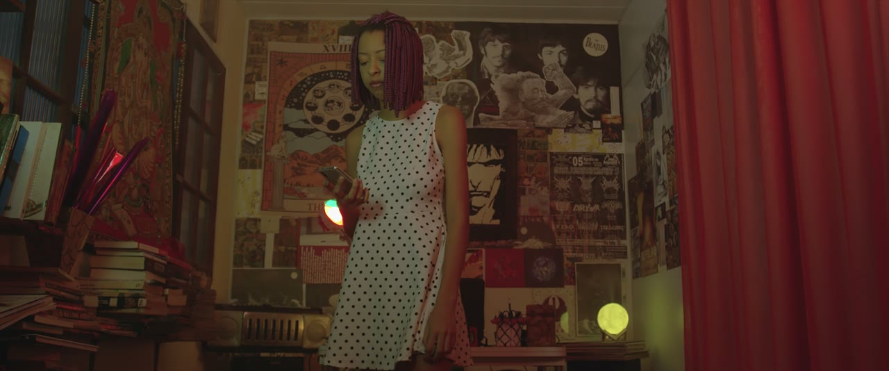
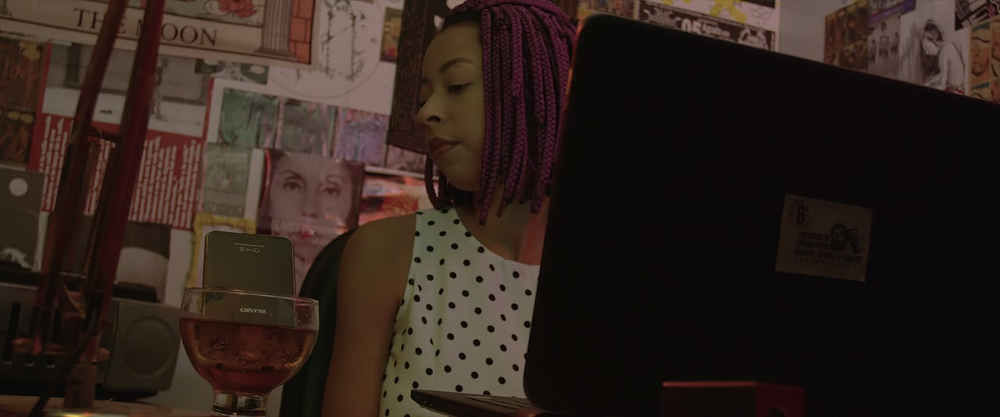
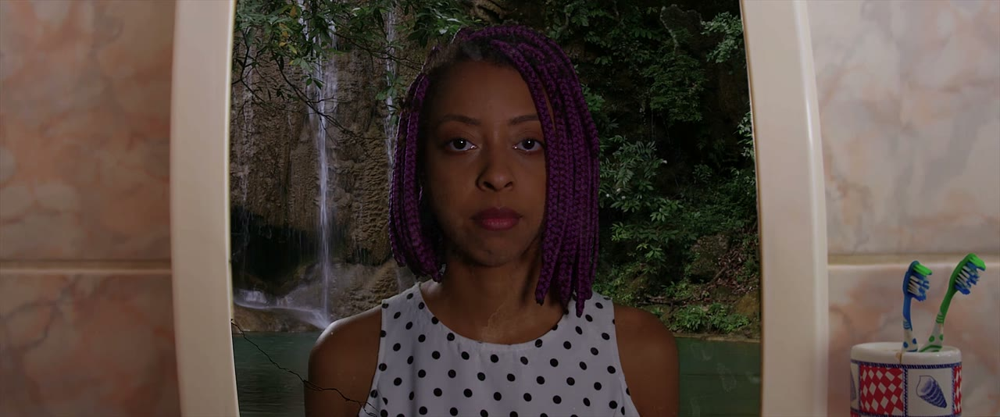

O QUADRO TEM BORDA.
O SOM NÃO TEM.
Quarta a gente aprendeu a escolher o que entra no quadro. Hoje a gente mexe na única coisa do filme que não cabe dentro dele.
O QUE FICOU
DE QUARTA?
Uma coisa só, a primeira que vier. Pode ser sobre a lente, pode ser sobre segurar a câmera, pode ser sobre o que deu errado.
O SOM ENTRA
SEM PEDIR LICENÇA
O SOM DE UMA COISA
QUASE NUNCA É
O SOM DELA
Osso quebrando é aipo. Soco é toalha molhada. Fogo grande é celofane. Gravar o som de verdade quase sempre decepciona, e quem descobre isso vira foley artist.
O REAL CHEGA FRACO
MISTURADO
COM TUDO O microfone é burro: ele pega o passo, o vento, o carro, a geladeira, a sua respiração, tudo no mesmo peso. O som certo se perde no meio.
LIMPO,
NA MEDIDA Sozinho, perto do microfone, sem nada em volta. Aí dá pra decidir se aquele passo é de quem está com medo ou de quem está com pressa.
APARTADA, SOM POR SOM

O QUARTO Passo no piso, barra do vestido, celular na mão. Tudo feito depois, em pé numa sala vazia.
A MESA Copo, tecla, gelo. O copo é outro copo. A tecla é outro teclado.
O ESPELHO Torneira, respiração, o silêncio do banheiro. O silêncio também foi gravado de propósito.O GRAVADOR É O CADERNO.
O MICROFONE É O OUVIDO.
Um guarda o som. O outro decide qual som chega. Trocar de gravador muda pouco. Trocar de microfone, ou só chegar mais perto com ele, muda tudo.
O QUE EU VOU
PEDIR PRA VOCÊS
VOCÊ VAI SER
O SOM DISSO
- 01Você escolhe um plano da lista. Ele não tem som nenhum.
- 02Você olha, decide com que objeto da sala vai fazer aquele som, e testa.
- 03Cinco minutos com o gravador na mão. O resto da turma fica em silêncio.
- 04Eu levo pra casa, monto o som em cima da imagem, e na próxima aula a gente assiste.
A regra que importa: é proibido usar o objeto certo. Se o plano é de uma faca, você não pode usar uma faca.
ESCOLHE O SEU
GRAVANDO
SÓ O SOM,
SEM A IMAGEM
A gente ouve o que cada um gravou sem ver o plano. A turma adivinha o que é. Se acertar, o som está contando sozinho. Se errar, também é informação: significa que o som só funciona colado na imagem, e isso não é defeito, é outra coisa.
EU EDITO,
VOCÊS ASSISTEM
Levo o que vocês gravaram hoje, monto em cima dos planos, e a gente abre a próxima aula com isso na tela. Até lá, uma tarefa só: fecha o olho em algum lugar por um minuto e repara em quantos sons você consegue separar.
O SOM É
DE VOCÊS
Estes quatro planos chegaram mudos na aula. Tudo o que se ouve neles foi feito à mão, aqui na Ribalta, com o que estava em cima da mesa. Nenhum som veio do que está na imagem.